1. Monitoring dan Logging dalam DevSecOps
Dalam pendekatan DevSecOps, monitoring dan logging berperan sebagai mekanisme observasi berkelanjutan untuk memastikan keamanan, ketersediaan, dan performa sistem. Monitoring tidak hanya berfokus pada uptime layanan, tetapi juga pada deteksi dini terhadap anomali, kegagalan aplikasi, serta potensi serangan keamanan.
Artikel ini membahas implementasi monitoring dan logging menggunakan ELK Stack (Elasticsearch dan Kibana) serta Prometheus dan Grafana pada lingkungan Windows 11 dengan PowerShell.
2. Arsitektur Monitoring dan Logging
Arsitektur sistem monitoring yang digunakan terdiri dari beberapa komponen utama:
- Aplikasi sederhana berbasis Flask sebagai sumber log
- Elasticsearch sebagai media penyimpanan dan indexing log
- Kibana sebagai alat visualisasi dan analisis log
- Prometheus sebagai pengumpul metrics sistem
- Grafana sebagai dashboard pemantauan performa
Aplikasi menghasilkan log aktivitas yang dikirim ke Elasticsearch dan dianalisis melalui Kibana, sementara Prometheus memantau metrics sistem seperti CPU dan RAM melalui Node Exporter yang kemudian divisualisasikan pada Grafana.
3. Implementasi Lingkungan Sistem
Seluruh layanan dijalankan menggunakan Docker pada sistem operasi Windows 11. Manajemen container dilakukan melalui PowerShell dengan menggunakan Docker Compose.
ELK Stack digunakan untuk centralized logging, sedangkan Prometheus dan Grafana digunakan untuk metrics monitoring. Aplikasi Flask dijalankan untuk menghasilkan log aktivitas sistem yang relevan dengan kebutuhan analisis keamanan.
4.1 Flow Praktik 1 : Tahap Persiapan
Pada tahap awal, dilakukan persiapan lingkungan kerja untuk implementasi centralized logging menggunakan ELK Stack (Elasticsearch, Logstash/Filebeat, dan Kibana) yang dijalankan menggunakan Docker.
Langkah pertama adalah membuat direktori baru sebagai workspace monitoring:
Direktori ini digunakan untuk menyimpan seluruh konfigurasi Docker, aplikasi simulasi, dan log aplikasi.
4.2 Flow Praktik 1 : Buat File Docker Compose ELK
Membuat File Dockerfile
Dockerfile digunakan untuk membangun image aplikasi Flask sederhana yang akan menghasilkan log.
Membuat File docker-compose.yml
File docker-compose.yml digunakan untuk menjalankan Elasticsearch, Kibana, dan aplikasi Flask secara terintegrasi.
File docker-compose.yml digunakan untuk menjalankan Elasticsearch, Kibana, dan aplikasi Flask secara terintegrasi.
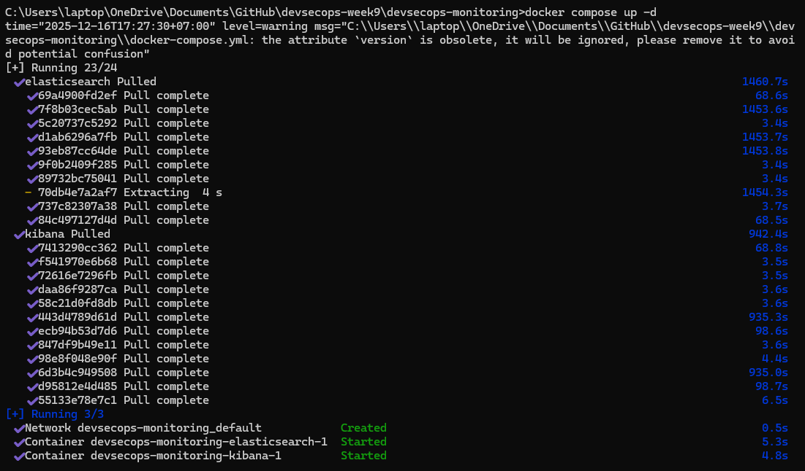
Setelah service berjalan, dilakukan pengujian akses:
Elasticsearch: http://localhost:9200
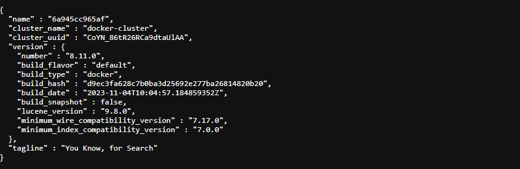
Kibana: http://localhost:5601
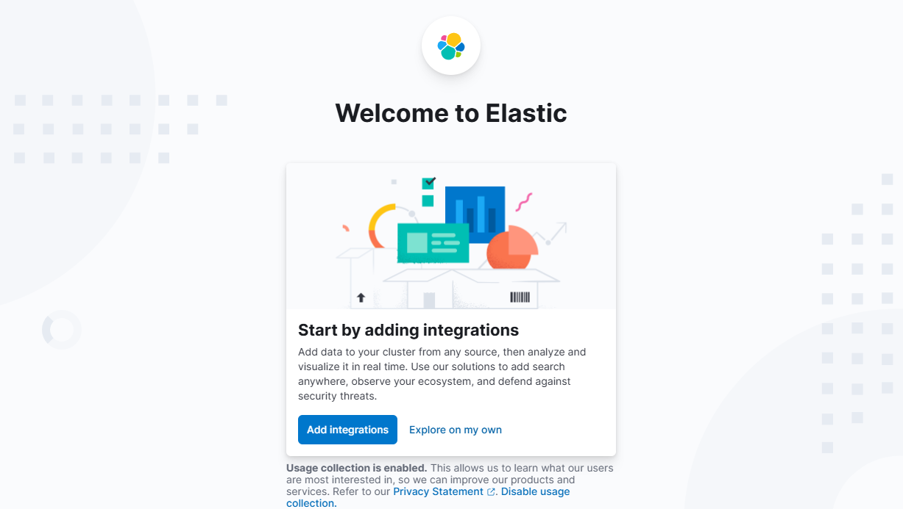
Hal ini memastikan bahwa ELK Stack telah berjalan dengan baik.
4.3 Flow Praktik 1 : Buat File Simulasi Log Aplikasi
Aplikasi Flask dibuat untuk menghasilkan berbagai jenis log yang akan dianalisis pada Kibana.
Membuat File app.py
Endpoint /login digunakan untuk mensimulasikan login gagal berulang (brute force).
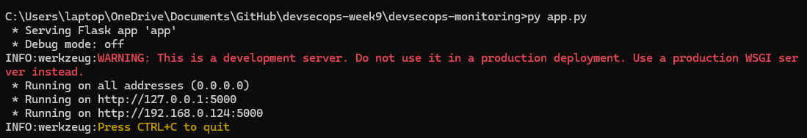
4.4 Flow Praktik 1 : Analisis di Kibana
Log yang masuk ke Elasticsearch dianalisis melalui Kibana Discover dengan melakukan pencarian log bertipe Failed login attempt. Selain itu, visualisasi log dibuat dalam bentuk dashboard untuk memudahkan analisis pola serangan.
Cari log Failed login attempt
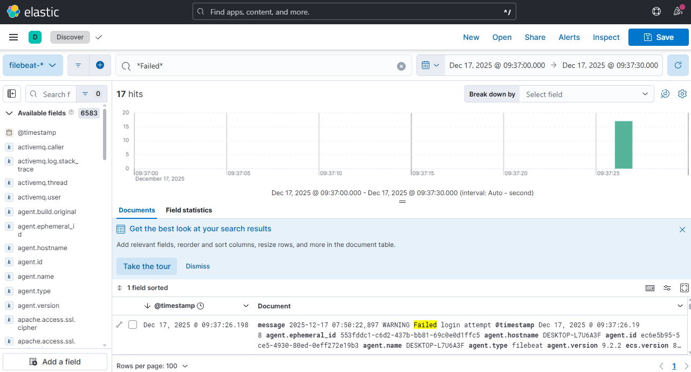
Buat dashboard
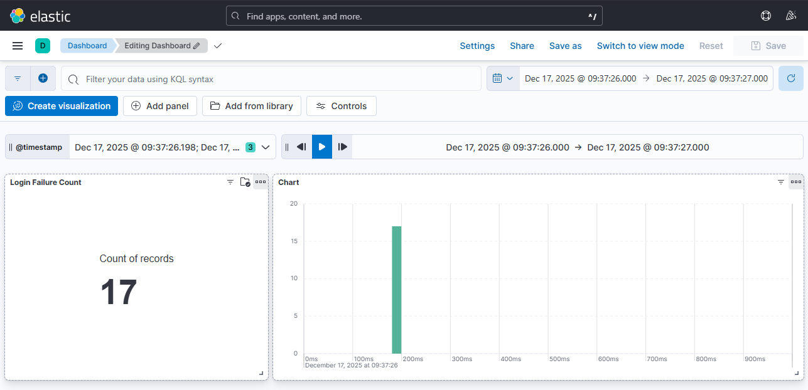
5.1 Flow Praktik 2 : Tahap Persiapan
File prometheus.yml dibuat untuk mengatur proses pengambilan metrik sistem.
Membuat file prometheus.yml
Edit dan tambahkan pada docker-compose.yml
Konfigurasi ini kemudian ditambahkan ke dalam docker-compose.yml untuk menjalankan Prometheus, Node Exporter, dan Grafana.
5.2 Flow Praktik 2 : Jalankan Semua Service
Seluruh container dijalankan ulang agar konfigurasi terbaru aktif
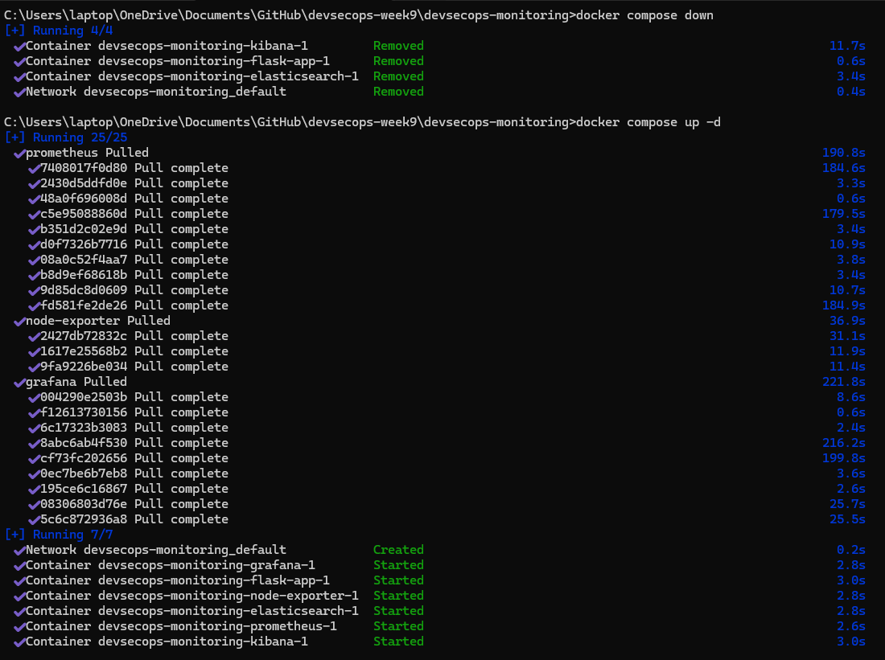
Status container diverifikasi menggunakan
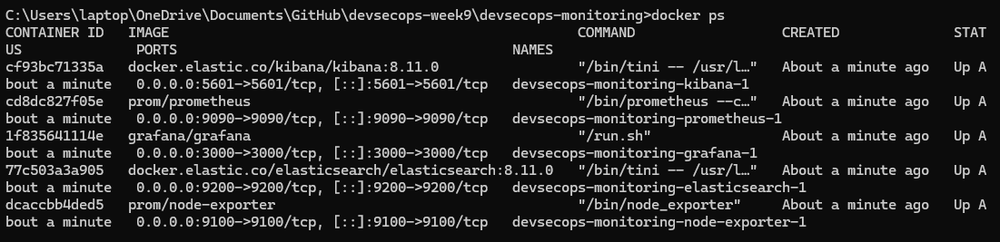
5.3 Flow Praktik 2 : Cek Prometheus
Prometheus diakses melalui browser: http://localhost:9090
Menu Status → Targets
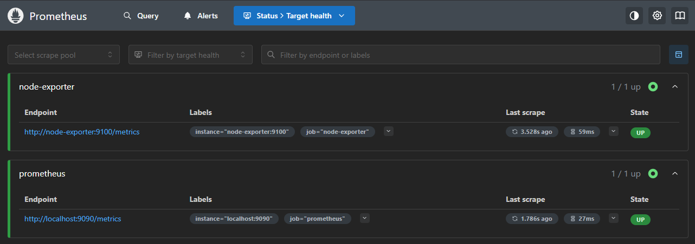
Menu Status → Targets digunakan untuk memastikan bahwa Node Exporter berada dalam status UP.
5.4 Flow Praktik 2 : Cek Grafana
Grafana diakses melalui: http://localhost:3000
Login menggunakan akun default
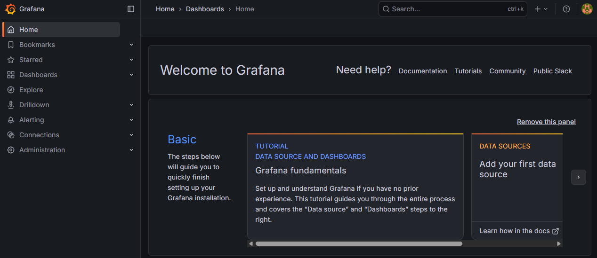
5.5 Flow Praktik 2 : Tambahkan Data Source Prometheus
Buka browser: http://localhost:3000
Pada Grafana, dilakukan penambahan data source Prometheus melalui menu:
- Connections → Data Sources
- Add new data source
- Pilih Prometheus
- URL:
- Kemudian dilakukan Save & Test untuk memastikan koneksi berhasil.
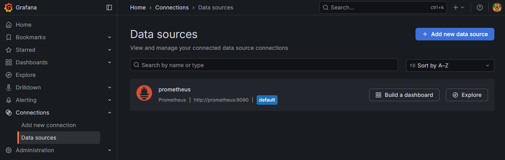
5.6 Flow Praktik 2 : Import Dashboard CPU & RAM
- Menu Dashboards → Import
- Dashboard ID: (Node Exporter Full)
- Klik tombol Load (biru di kanan)
- Import
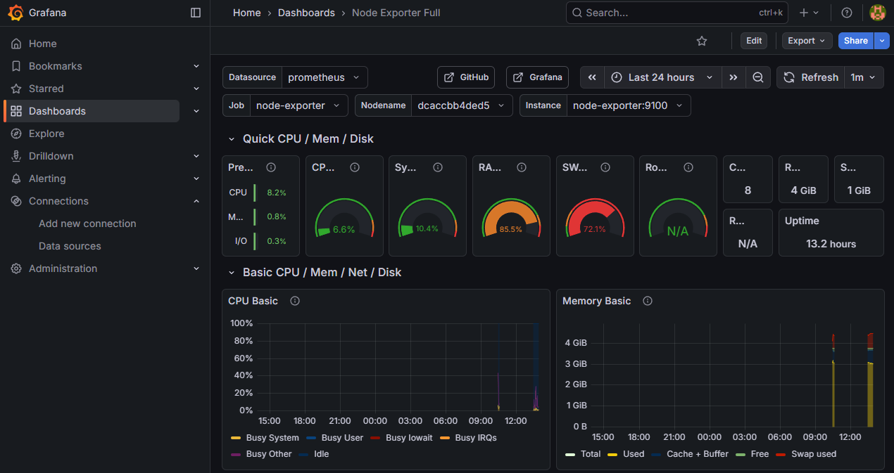
Dashboard ini digunakan untuk memonitor penggunaan CPU dan RAM secara real-time.
6.1 Simulasi Skenario Keamanan: Error aplikasi
Simulasi error dilakukan dengan menambahkan endpoint /error pada aplikasi Flask yang memicu exception.
1. Tambahkan endpoint error di app.py
Edit app.py, tambahkan route ini:
Sehingga app.py lengkap seperti ini:
2. Jalankan ulang Flask (Docker)
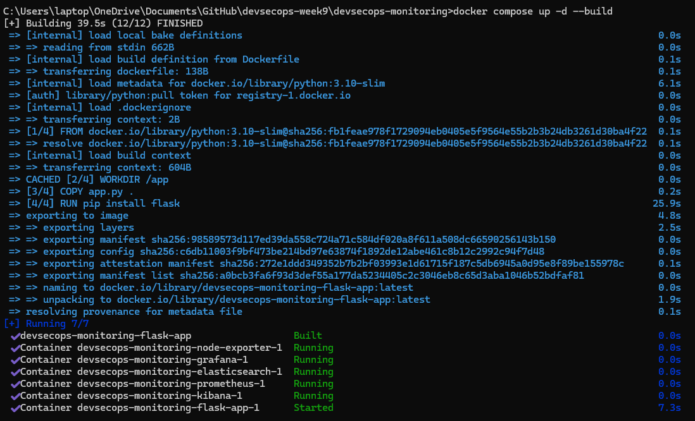
3. Trigger
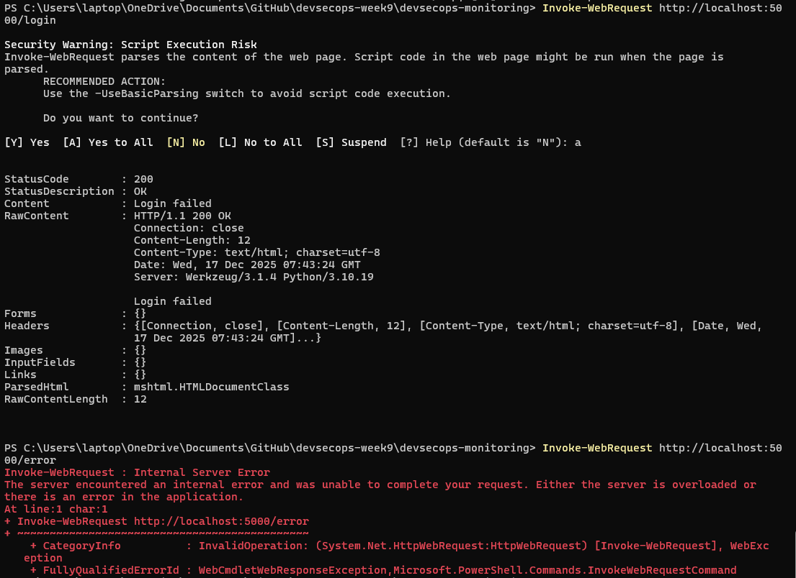
4. Hasil
Simulasi Login Gagal (Brute Force)
Simulasi Error Aplikasi
Kibana
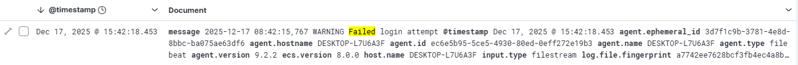
6.2. Simulasi Skenario Keamanan: Login gagal berulang
Untuk menguji efektivitas monitoring dan logging, dilakukan beberapa simulasi sebagai berikut:
1. Jalankan ini di PowerShell:
Artinya:
30 request login gagal
Dalam waktu singkat
Sangat mirip brute force attack
2. Hasil:
Simulasi Login gagal berulang
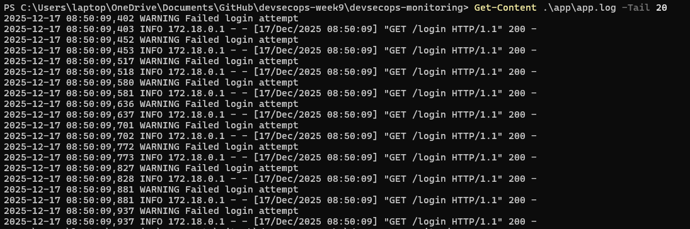
Kibana
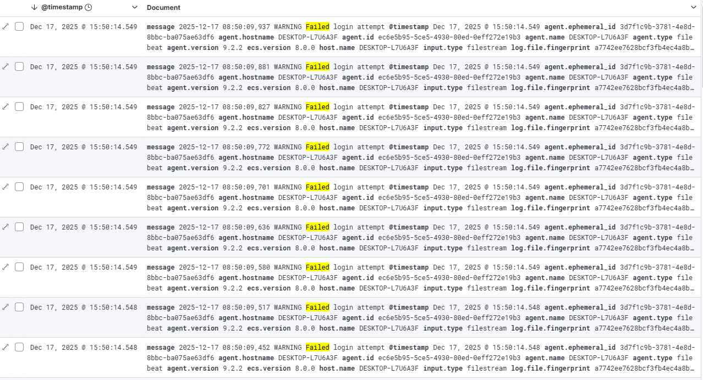
6.3. Simulasi Skenario Keamanan: Beban sistem tinggi (CPU)
1. Jalankan di PowerShell:
Artinya:
Membuat 8 job
Mengunci 8 core CPU
2. Hasil:
Grafana: Sebelum
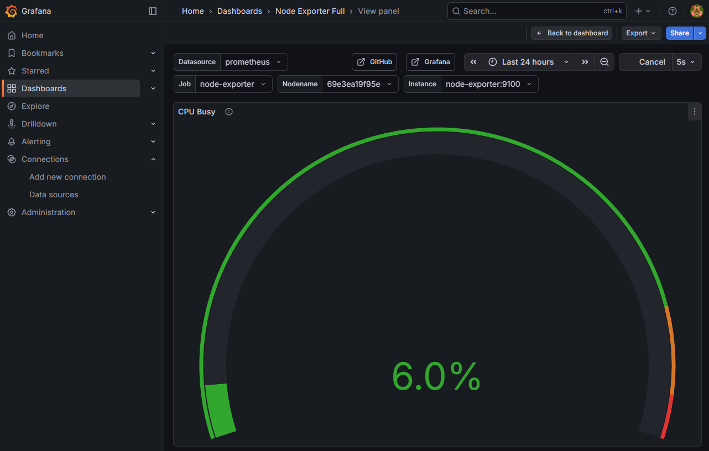
Grafana: Sesudah
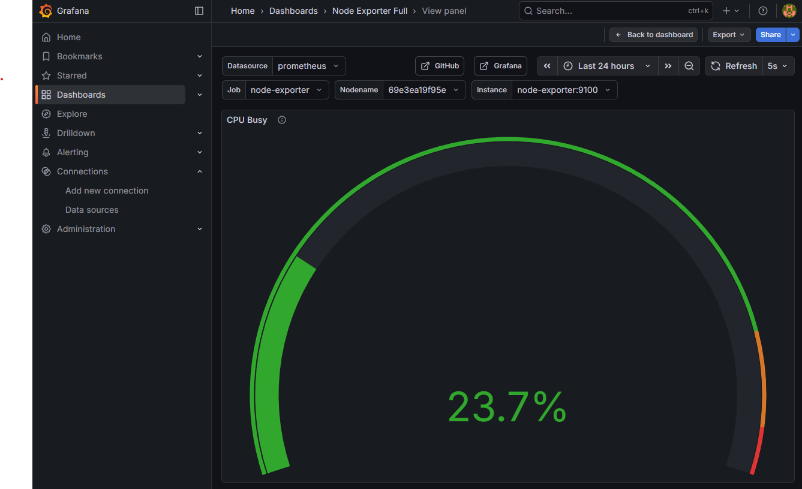
Hentikan semua Job
7. Hasil Observasi Monitoring
Berdasarkan hasil pengamatan:
- Kibana menampilkan peningkatan log Failed login attempt dalam waktu singkat
- Terjadi pola log berulang yang mengindikasikan aktivitas mencurigakan
- Grafana menunjukkan lonjakan CPU usage saat simulasi beban tinggi dilakukan
- Penggunaan memory meningkat ketika error aplikasi terjadi secara berulang
Dashboard pada Kibana dan Grafana mempermudah analisis berbasis waktu (time-series) dan membantu memahami hubungan antara log aplikasi dan metrics sistem.
8. Analisis Keamanan Sistem
Pada praktik monitoring DevSecOps ini, dilakukan tiga skenario simulasi keamanan untuk menguji kemampuan sistem monitoring dalam mendeteksi potensi ancaman, yaitu error aplikasi, login gagal berulang, dan beban sistem tinggi. Seluruh aktivitas dipantau menggunakan ELK Stack untuk log dan Prometheus–Grafana untuk metrik sistem.
1. Simulasi Error Aplikasi
Simulasi error dilakukan dengan memicu exception pada aplikasi Flask melalui endpoint /error. Aktivitas ini menghasilkan log dengan level ERROR yang tercatat di sistem logging dan dikirim ke Elasticsearch.
Indikasi ancaman:
- Munculnya log error secara tiba-tiba dan berulang
- Indikasi bug aplikasi atau input tidak tervalidasi
- Potensi eksploitasi celah aplikasi (error-based attack>
Dampak ke sistem:
- Aplikasi dapat crash atau berhenti merespons
- Penurunan keandalan layanan
- Informasi error berpotensi membocorkan detail sistem jika tidak ditangani dengan baik
2. Simulasi Login Gagal Berulang (Brute Force)
Simulasi brute force dilakukan dengan mengakses endpoint /login secara berulang dalam waktu singkat. Setiap percobaan login gagal menghasilkan log dengan level WARNING yang menunjukkan pola kegagalan autentikasi.
Indikasi ancaman:
- Banyak event login gagal dalam waktu singkat
- Pola akses tidak wajar dari sisi aplikasi
- Karakteristik serangan brute force terhadap kredensial
Dampak ke sistem:
- Risiko pengambilalihan akun (account takeover)
- Peningkatan beban aplikasi akibat request berulang
- Penurunan keamanan autentikasi jika tidak ada mekanisme pembatasan
3. Simulasi Beban Sistem Tinggi (High CPU & RAM)
Beban sistem disimulasikan dengan menghasilkan konsumsi CPU dan memori yang tinggi secara bersamaan. Hasilnya terlihat jelas pada dashboard Grafana melalui lonjakan CPU usage dan penggunaan memori.
Indikasi ancaman:
- Lonjakan penggunaan resource secara tiba-tiba
- Pola yang menyerupai serangan denial of service (DoS)
- Ketidakwajaran aktivitas sistem dibanding kondisi normal
Dampak ke sistem:
- Aplikasi menjadi lambat atau tidak responsif
- Potensi downtime layanan
- Resource starvation yang memengaruhi service lain
9. Dokumentasi dan Bukti Implementasi
Sebagai bukti implementasi, disertakan:
- Screenshot dashboard log pada Kibana
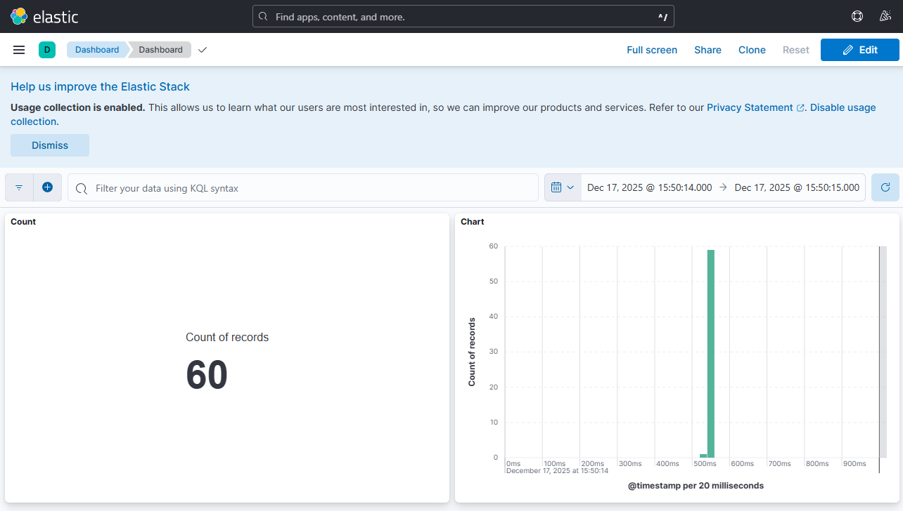
- Screenshot dashboard metrics CPU dan RAM pada Grafana
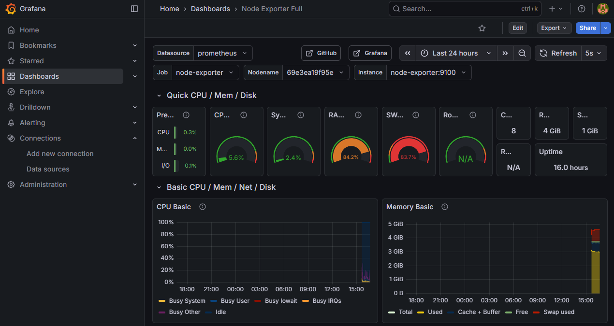
- Repository GitHub berisi konfigurasi Docker dan dokumentasi
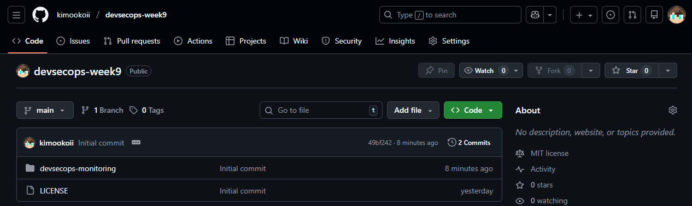
Dokumentasi ini menunjukkan bahwa sistem monitoring dan logging telah berjalan sesuai dengan skenario tugas yang diberikan.
10. Kesimpulan
Implementasi ELK Stack serta Prometheus dan Grafana membuktikan bahwa monitoring dan logging merupakan komponen penting dalam DevSecOps. Dengan visibilitas yang baik terhadap log dan metrics sistem, potensi ancaman keamanan dan gangguan performa dapat terdeteksi lebih awal.
Pendekatan ini mendukung prinsip continuous security monitoring dan membantu tim dalam melakukan respons insiden secara cepat dan terukur.